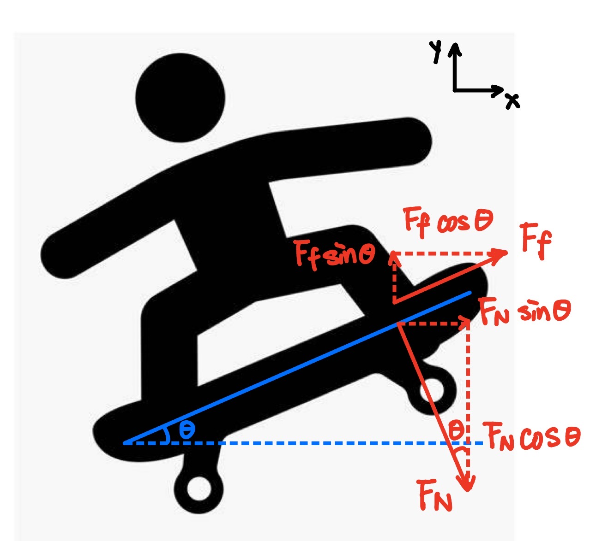

How to Jump Higher
- Strong Pop: Slam the tail down hard with your back foot.
- Quick Front Foot Slide: The faster and sharper the slide, the more lift you get.
- Knees to Chest: Tuck your knees up to allow more board clearance.
- Commitment: Don’t bail mid-air — stay over the board!

How to Jump Farther
- Speed Matters: Approach with a faster but controllable speed. (Initial horizontal velocity directly proportional to range if air time is constant)
- Level Pop: Keep the board flat to maintain forward glide.
- Exert Force in appropriate direction: Pop straight up to ensure maximum height.
Exercises to Practice
- 1. Wear protection!
- 2. Mark landing and popping point with chalk to gauge results.
- 3. Don’t forget to warm up.
- 4. Film yourself to review motions and timing.
- 5. Try hopping over small obstacles (sticks, bottles).
- 6. Workout to increase leg strength to jump higher.
Common Mistakes
- Not committing: Afraid of jumping, but this often results in a higher chance of getting hurt.
- No front foot slide: Without the slide, the board won’t rise properly.
- Jumping too early: Incoordinate body motion causes inconsistent force.
- Feet too far apart: Makes it harder to control the board in the air.